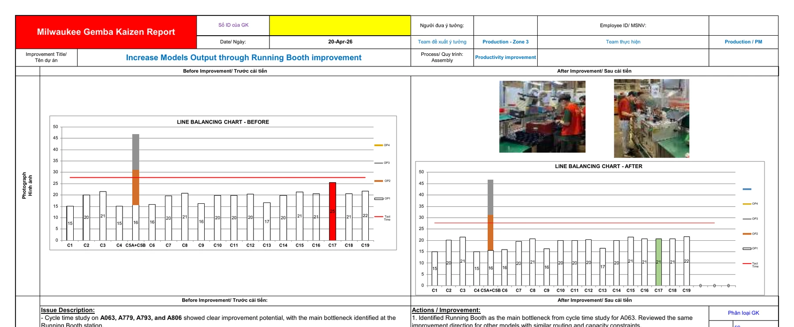
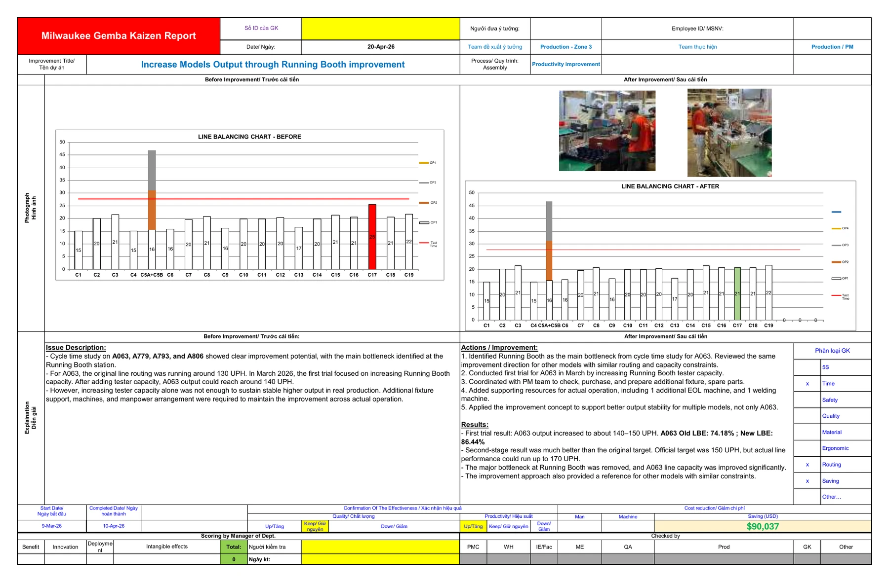

S
Situation
Several models had unbalanced work content, bottlenecks, and manpower allocation that limited throughput and increased operating cost.
07 · Industrial Engineering · Capacity Improvement
Time studies, bottleneck analysis, work-element balancing, and manpower optimization across Grinder and D&F product families.

Several models had unbalanced work content, bottlenecks, and manpower allocation that limited throughput and increased operating cost.
Identify the main cycle-time constraints and redesign work allocation to improve line balance, output, and manpower efficiency.
Conducted detailed time studies, broke work into elements, compared station cycle times, identified bottlenecks, tested alternative task allocations, and worked with operations to validate practical changes across 13 Grinder-family models and four D&F-family models.
Reduced average headcount by 2–3, improved line-balancing efficiency by 15%–25%, increased UPH by 10–20 per Grinder model and 10–30 for four D&F models, and delivered approximately USD 90,000 in total savings.
A continuous-improvement report summarizes the running-booth study, cycle-time analysis, before/after observations, and implemented countermeasures.

Technology and methods: Time Study · Line Balancing · Capacity Analysis · Continuous Improvement.